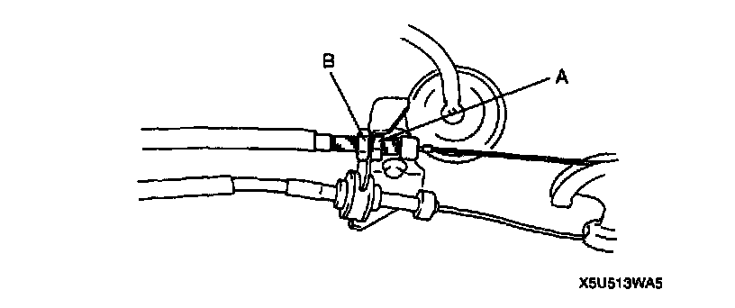
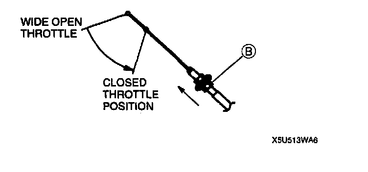
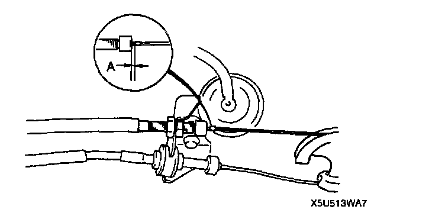

Throttle Cable/Linkage: Adjustments
THROTTLE CABLE ADJUSTMENT
1. Loosen nut A and B.

2. Put nut B in the direction of the arrow as shown in the figure, with the throttle lever in closed throttle position. Then tighten the nut by hand.
Note: Tighten nut A by pushing it down so that the throttle cable will not come off from the bracket.
3. Tighten nut A with the throttle lever totally closed.
Tightening torque 12 - 16 Nm (1.2 - 1.7 kgf-m, 8.7 - 12.2 ft. lbs.)
4. Verify that the throttle cable moves smoothly.

5. Verify that there is no deflection, and that the throttle cable is adjusted within dimension A as shown in the figure below when the throttle cable is in closed throttle position.
Dimension A: 0.8 - 1.5 mm (0.03 - 0.05 inch)